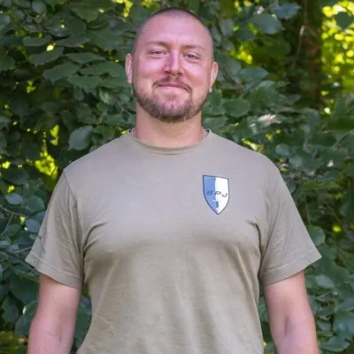
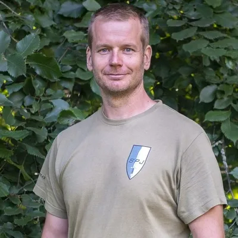
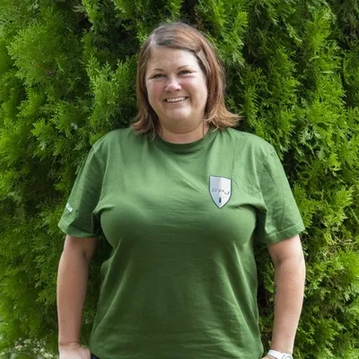
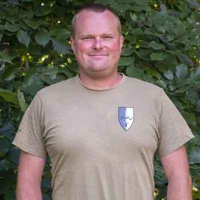
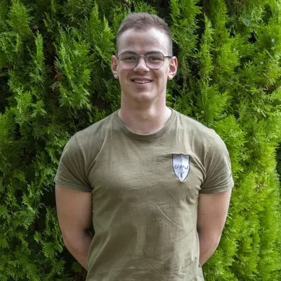
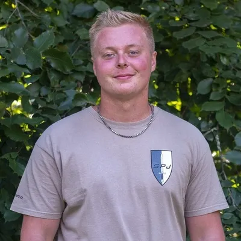
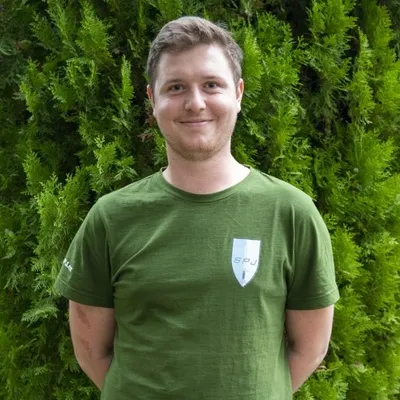
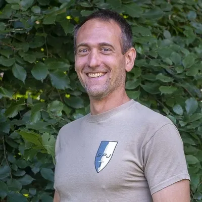
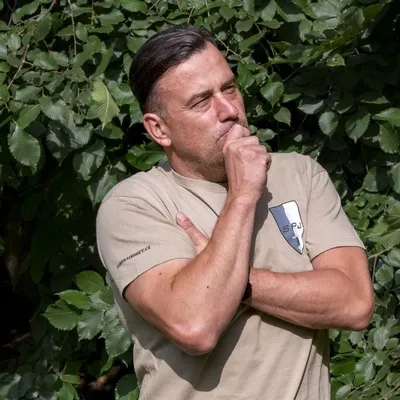

HLAVNÍ VEDOUCÍ

LUKÁŠ KABELKA
Narozen: 1985
- Absolvent SPŠ N Rosice
- Absolvent VŠ DTI - Učitel ekonomických předmětů
- Trenérský kurz fitness
- Příslušník AČR
- Práce s dětmi:
- 2015 => dodnes – Tábor SPJ
ZDRAVOTNÍK

JIŘÍ ČTVRTNÍČEK
Narozen: 1979
- Absolvent MU Brno a UK Praha – Fakulta tělesné výchovy a sportu
- Příslušník PČR
- 2007 – instruktor PČR pro střeleckou, taktickou a speciální přípravu
- 2009 – 2016 – Instruktor Lanového centra
- Práce s dětmi: 2015 – dodnes – Tábor SPJ
- 2009 – lektor první pomoci
- Práce s dětmi:
- 1998 => 2003 – TO Draci
- 2011 => 2013 – Airsoft Camp Růžená (CK Topinka)
- 2012 => dodnes – Tábor SPJ

ZUZANA PUKLICKÁ
Narozena: 1985
- Absolvent všeobecná sestra Znojmo a dětská sestra NCO NZO Brno
- 2008 – 2015 – dětská setra Brno Černá Pole
- 2015 – 2018 – porodní oddělení nemocnice Ivančice
- 2018 – dodnes – vrchní sestra v domově se zvláštním režimem Nové Syrovice
- Práce s dětmi:
- 2018 => dodnes – Tábor SPJ
ODDÍLOVÝ VEDOUCÍ

MIREK ZUKAL
Narozen: 1986
- Absolvent vyšší odborné školy francouzské v Brně – Obor výrobní a obchodní management textilu
- Absolvent jazykové školy – německý jazyk
- Příslušník PČR
- 2012 – Instruktor Lanového centra Boskovice
- Kurz potápění
- Práce s dětmi:
- 2008 => 2010 – instruktor seobobrany, Trenér pingpongu
- 2011 => 2012 – Airsoft Camp Růžená(CK Topinka)
- 2014 => dodnes – tábor SPJ

OTAKAR KLIMÁNEK
Narozen: 2003
- Absolvent SŠPU Hodonín
- Příslušník AČR
- Práce s dětmi:
- 2021 => 2022 – Haluzická hájenka
- 2021 => dodnes – tábor SPJ
- 2023 => 2024 - LT Hornice

LIBOR ŽALUD
Narozen: 2000
- 2006 – 2016 – Judo
- 2012 – 3. místo judo, mistrovství moravy
- 2014 – 3. místo judo, Krems, Rakousko
- 2016 – 2017 – Thai & kickbox
- Práce s dětmi:
- 2017 => 2018 – Trenér Juda
- 2018 => dodnes – tábor SPJ

MAREK PŘINESDOMŮ
Narozen: 1999
- Absolvent Gymnázia T.G. Masaryka – Zastávka
- Práce s dětmi:
- 2017 => dodnes – tábor SPJ
ODBORNÍ VEDOUCÍ

PAVEL PŘECECHTĚL
Narozen: 1980
- Absolvent FSpS Brno
- 2006 – PČR 2009 – 2016 – instruktor Speciální pořádková jednotka Brno
- 2016 – 2019 – OSVČ – Ochrana zdraví a majetku 2019– OSVČ – masér, terapeut, trenér
- Práce s dětmi:
- 2004 => 2006 – Judo Tori Brno
- 2011 => 2013 – Airsoft Camp Růžená (CK Topinka)
- 2020 - Todokan Jiu-Jitsu Zbýšov
- 2021 => dodnes – Tábor SPJ

LADISLAV RŮŽIČKA
Narozen: 1971
- OSVČ
- Práce s dětmi:
- 2005 => TK STAN – Třešť
- 2006 => 2007 – TK STAN – Kachlička - 2012 => dodnes – tábor SPJ

ZPĚT NA HLAVNÍ STRÁNKU TOMÁŠ ÚLEHLA
Narozen: 1974
- Absolvent VUT Brno
- Vyšetřovatel HZS
- Práce s dětmi:
- 1989 => 1994 – 19. skautský oddíl Javorového listu Brno
- 2012 => dodnes – tábor SPJ